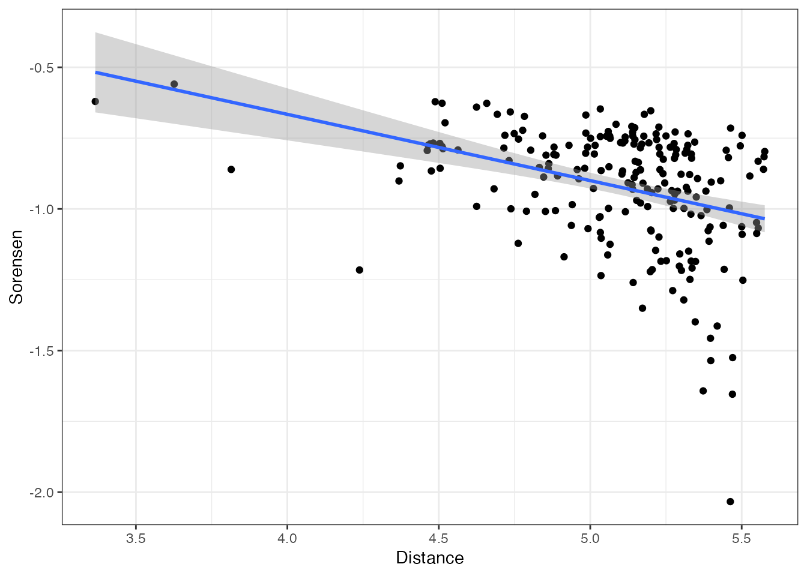
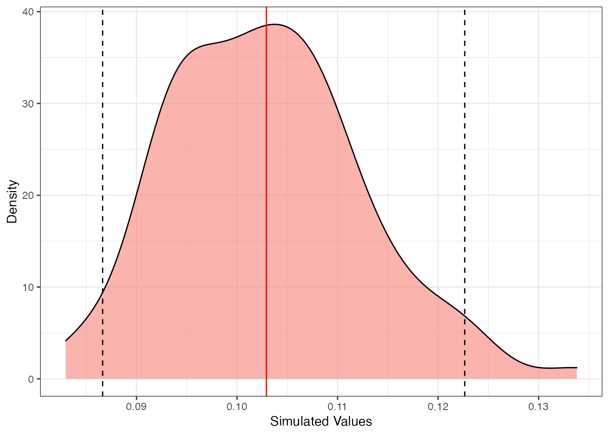
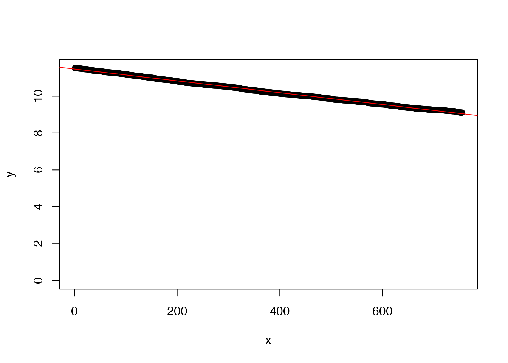
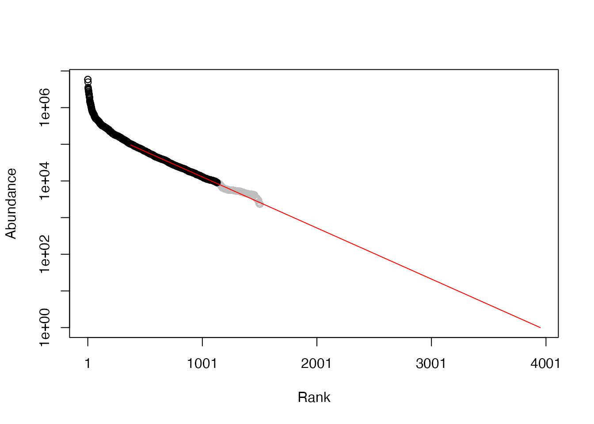
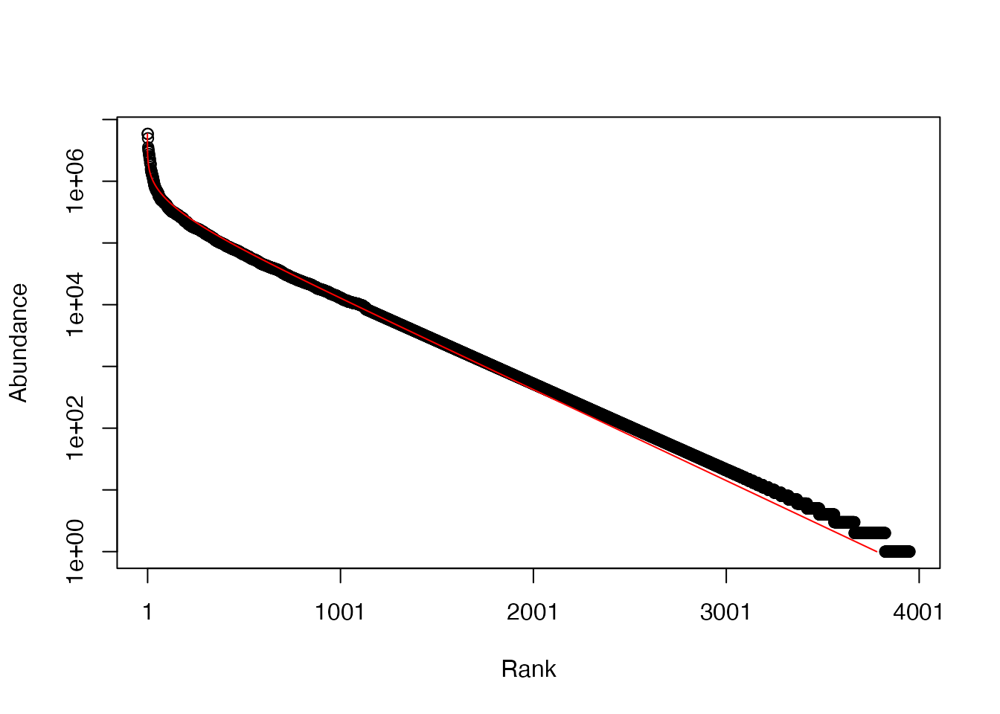
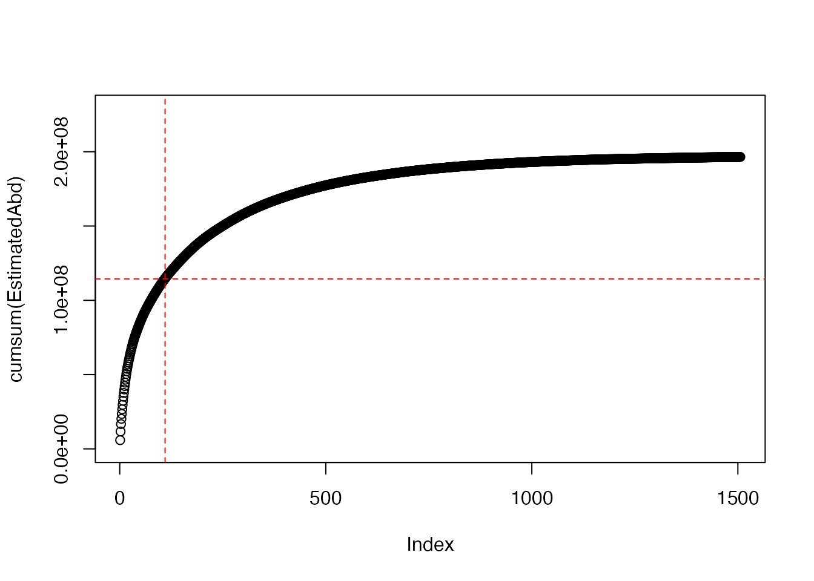

3 Results
3.1 Plots
3.2 Random plot
One plot per location
# One plot per location...
Plots %>%
mutate(Random = runif(n())) -> RandomizedPlots
RandomizedPlots %>%
group_by(Location) %>%
summarize(MaxRandom = max(Random)) %>%
rename(Random = MaxRandom) %>%
inner_join(RandomizedPlots) %>%
select(Plot) -> SelectedPlots## Joining, by = c("Location", "Random")# ...or all plots SelectedPlots <- Plots['Plot']
# Distances
library("dbmss") %>%
suppressMessages()
Plots %>%
inner_join(SelectedPlots) %>%
rename(PointName = Plot, X = X_UTM, Y = Y_UTM,
PointType = Location) %>%
mutate(PointWeight = 1) %>%
wmppp(unitname = c("meter", "meters")) %>%
pairdist() %>%
as.dist -> Distances## Joining, by = "Plot"3.3 Sorensen
library("ade4") %>%
suppressMessages()
Abundances %>%
inner_join(SelectedPlots) %>%
select(-Plot) %>%
dist.binary(method = 5) -> Sorensen## Joining, by = "Plot"Sorensen <- 1 - Sorensen3.4 Relation
tibble(Sorensen = as.numeric(log10(Sorensen)), Distance = as.numeric(log10(Distances))) %>%
filter(Distance > 3) -> dist_plots
lm(Sorensen ~ Distance, data = dist_plots) -> regression
regression %>%
summary()##
## Call:
## lm(formula = Sorensen ~ Distance, data = dist_plots)
##
## Residuals:
## Min 1Q Median 3Q Max
## -1.02518 -0.09879 0.02880 0.15867 0.29373
##
## Coefficients:
## Estimate Std. Error t value Pr(>|t|)
## (Intercept) 0.27000 0.20849 1.295 0.197
## Distance -0.23400 0.04088 -5.723 3.63e-08
##
## (Intercept)
## Distance ***
## ---
## Signif. codes:
## 0 '***' 0.001 '**' 0.01 '*' 0.05 '.' 0.1 ' ' 1
##
## Residual standard error: 0.1985 on 207 degrees of freedom
## Multiple R-squared: 0.1366, Adjusted R-squared: 0.1325
## F-statistic: 32.76 on 1 and 207 DF, p-value: 3.63e-08(-regression$coefficients[2]/2 -> z)## Distance
## 0.1170003dist_plots %>%
ggplot(aes(x = Distance, y = Sorensen)) + geom_point() +
geom_smooth(method = lm)## `geom_smooth()` using formula 'y ~ x'
## Bootstrap
library("broom")
estimate_z <- function() {
# Select one plot per location...
Plots %>%
mutate(Random = runif(n())) -> RandomizedPlots
RandomizedPlots %>%
group_by(Location) %>%
summarize(MaxRandom = max(Random)) %>%
rename(Random = MaxRandom) %>%
inner_join(RandomizedPlots) %>%
suppressMessages %>%
select(Plot) -> SelectedPlots
# Calculate distances
Plots %>%
inner_join(SelectedPlots) %>%
suppressMessages %>%
rename(PointName = Plot, X = X_UTM, Y = Y_UTM,
PointType = Location) %>%
mutate(PointWeight = 1) %>%
wmppp(unitname = c("meter", "meters")) %>%
suppressWarnings %>%
pairdist() %>%
as.dist -> Distances
# Calculate Sorensen divergence
Abundances %>%
inner_join(SelectedPlots) %>%
suppressMessages %>%
select(-Plot) %>%
dist.binary(method = 5) -> Sorensen
Sorensen <- 1 - Sorensen
# Regress
tibble(Sorensen = as.numeric(log10(Sorensen)),
Distance = as.numeric(log10(Distances))) %>%
dplyr::filter(Distance > 3) %>%
lm(Sorensen ~ Distance, data = .) %>%
tidy %>%
dplyr::filter(term == "Distance") %>%
select(estimate) %>%
pull -> z
z <- -z/2
return(z)
}
n_simulations <- 100
pgb <- txtProgressBar(min = 0, max = n_simulations)
sim_z <- rep(0, n_simulations)
for (i in 1:n_simulations) {
sim_z[i] <- estimate_z()
setTxtProgressBar(pgb, i)
}## ==================================================sim_z %>%
density %>%
plotentropart::as.SimTest(mean(sim_z), sim_z) %>%
autoplot
3.5 Extrapolation
# Extrapolation de Paracou : .625km², 604 sp >
# c=631
(c <- 600/0.625^z)## Distance
## 633.9184# Nombre d'espèces total
(spsim <- c * 80000^z)## Distance
## 2375.183.6 Fisher
# Nombre d'arbres
Ntrees <- 8 * 10^6 * mean(colSums(Abundances[, -1]))
# Taux de couverture par placette
library("entropart") %>%
suppressMessages()
C <- apply(Abundances[, -1], 1, function(X) Coverage(X))
# Distribution de probabilités, corrigée par les
# taux de couverture
ObsProba <- C %*% as.matrix(Abundances[, -1]/rowSums(Abundances[,
-1]))/nrow(Abundances)
plot(as.ProbaVector(ObsProba))# Abondances
EstimatedAbd <- as.AbdVector(round(ObsProba * Ntrees,
0))
# 50% centraux
EA50 <- as.AbdVector(sort(EstimatedAbd, decreasing = T)[round(length(EstimatedAbd)/4):round(length(EstimatedAbd) *
3/4)])
x <- 1:length(EA50)
y <- as.numeric(log(EA50))
# Régression rang-abondance sur la partie
# rectiligne de la courbe
EA50lm <- lm(y ~ x)
# Nombre d'espèces extrapolé
NbSpecies <- round(-EA50lm$coefficients[1]/EA50lm$coefficients[2]) +
round(length(EstimatedAbd)/4) - 1
# Régression de la partie rectiligne
plot(y ~ x, ylim = c(0, max(y)))
summary(EA50lm)##
## Call:
## lm(formula = y ~ x)
##
## Residuals:
## Min 1Q Median 3Q Max
## -0.050607 -0.026011 -0.004327 0.017631 0.084264
##
## Coefficients:
## Estimate Std. Error t value
## (Intercept) 1.147e+01 2.303e-03 4981.6
## x -3.208e-03 5.278e-06 -607.8
## Pr(>|t|)
## (Intercept) <2e-16 ***
## x <2e-16 ***
## ---
## Signif. codes:
## 0 '***' 0.001 '**' 0.01 '*' 0.05 '.' 0.1 ' ' 1
##
## Residual standard error: 0.03161 on 753 degrees of freedom
## Multiple R-squared: 0.998, Adjusted R-squared: 0.998
## F-statistic: 3.694e+05 on 1 and 753 DF, p-value: < 2.2e-16abline(a = EA50lm$coefficients[1], b = EA50lm$coefficients[2],
col = "red")
# Metacommunauté complète: partie observée
EA75 <- sort(EstimatedAbd, decreasing = T)[1:round(length(EstimatedAbd) *
3/4)]
plot(EstimatedAbd, ylim = c(1, max(EA75)), xlim = c(0,
NbSpecies), col = "grey")
points(EA75, ylim = c(1, max(EA75)), xlim = c(0, -EA50lm$coefficients[1]/EA50lm$coefficients[2]))
Extra <- exp(EA50lm$coefficients[1]) * cumprod(rep(exp(EA50lm$coefficients[2]),
NbSpecies - round(length(EstimatedAbd)/4) + 1))
lines(x = round(length(EstimatedAbd)/4):NbSpecies,
y = Extra, col = "red")
# Vérification : effectif total
(Ntotal <- sum(EA75) + sum(Extra[(length(EA75) - NbSpecies +
length(Extra) + 1):length(Extra)]))## [1] 197186462# Ajustement d'une log-série
plot(as.AbdVector(round(c(EA75, Extra[(length(EA75) -
NbSpecies + length(Extra) + 1):length(Extra)]))),
Distribution = "lseries")
## $alpha
## [1] 294.5374# Nombre d'espèces estimées
NbSpecies## (Intercept)
## 39513.7 Hyperdominance
# Hyperdominance
EstimatedAbd <- sort(round(ObsProba * Ntrees, 0), decreasing = TRUE)
plot(cumsum(EstimatedAbd), ylim = c(0, Ntrees))
abline(h = Ntrees/2, lty = 2, col = "red")
hdSpecies <- min(which(cumsum(EstimatedAbd) > Ntrees/2))
abline(v = hdSpecies, lty = 2, col = "red")